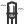
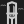
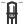
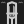
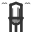
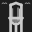

Ida — the "arms" complaint, 2026-09-10. Menu icon at real menu sizes, blown up 12x, nearest-neighbor.
Ink #333333 on white / #cccccc on #1e1e1e (this suite's actual menu-text tones, not pure black/white).
SHIPPED (line clouds, as in lib/Icons.lib.php today)
shipped-with-clouds16px
17px
24px


PROPOSAL 1: remove clouds entirely
PROPOSAL 2: same position, filled AREA not stroked LINE
OPTION 3: same ink, moved off the shoulder axis (above roof, not beside wall)
raised-clouds16px
17px
24px


32px

